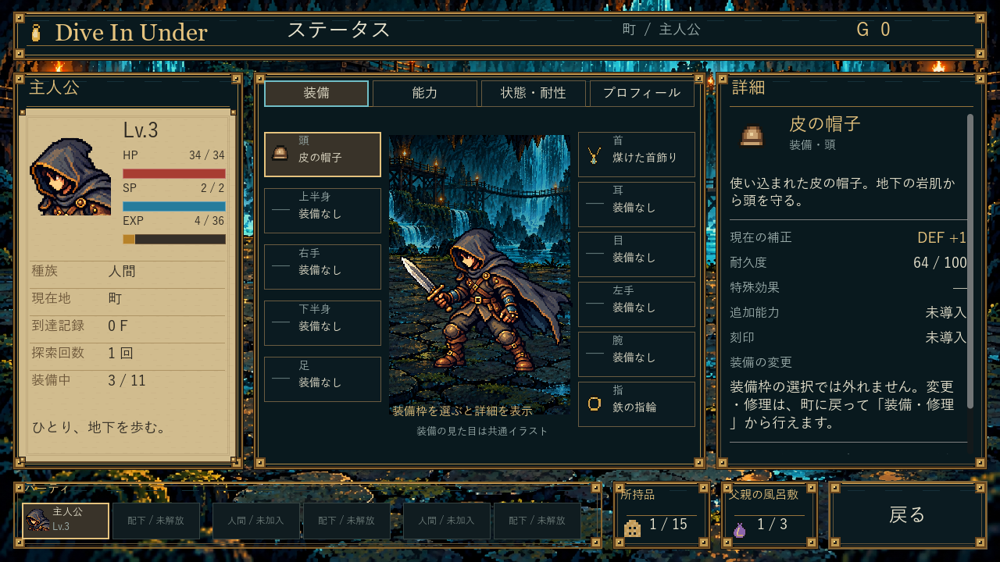
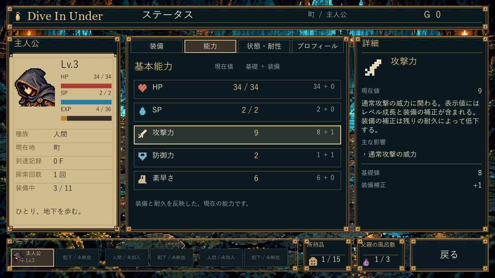
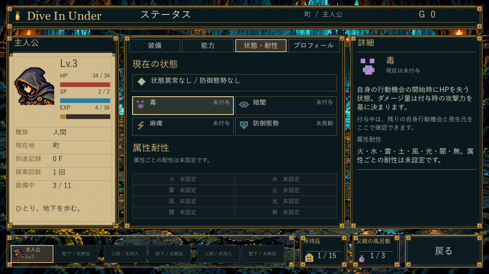
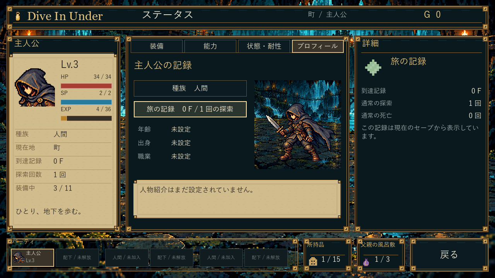

Dive In Under 0.5.3Dive In Under — 0.5.3
「01 ゲームを起動」の通常EXEに反映済みです。ゲーム内で町へ戻り、「ステータス」を選ぶと確認できます。起動中の旧版は閉じてから起動し直してください。
画像の仮数値や経歴は流用せず、実データで使える配置・装飾・情報表示を取り込みました。装備枠のクリックは情報確認のみ。画像は通常起動と同じEXE/PCKを固定条件で確認した画面です。

装備：顔横のHP/SP/EXP、周囲の11枠、簡潔な詳細、下部の所持品と風呂敷の実枠数。
能力：アイコン・現在値・基礎と装備補正・主な影響を確認。
状態：未付与の状態も説明を確認可能。残り期間やダメージを捏造しません。
プロフィール：設定済みの人物情報と実記録、既存の立ち絵を使用。既存の保存先から引き継ぎます。旧形式の原本は最初の変更前に退避。旧EXEとZIPも保持。起動先・SHA / CI成功 / 旧0.4.6の記録。